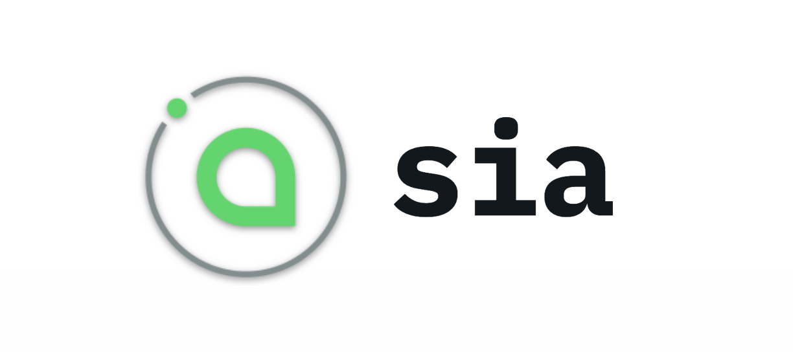
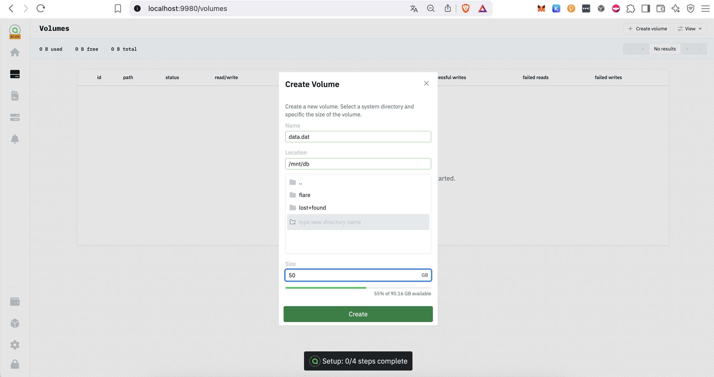

download sia foundation hostd
sudo curl -fsSL https://linux.sia.tech/debian/gpg | sudo gpg --dearmor -o /usr/share/keyrings/siafoundation.gpg
sudo chmod 644 /usr/share/keyrings/siafoundation.gpg
echo "deb [signed-by=/usr/share/keyrings/siafoundation.gpg] https://linux.sia.tech/debian $(. /etc/os-release && echo "$VERSION_CODENAME") main" | sudo tee /etc/apt/sources.list.d/siafoundation.list
sudo apt updateinstall hostd cli
sudo apt install hostd
hostd version
sudo systemctl enable --now hostdconfigure hostd and enter your wallet private key
sudo hostd config
sudo hostd version
sudo systemctl enable --now hostd
sudo systemctl status hostdupdate hostd service
sudo apt update
sudo apt upgrade hostdaccess hostd webui using portforwarding
ssh -L 9980:localhost:9980 jw@34.16.28.187 -i ~/.ssh/jw_ed25519creating volume & configure pricing 